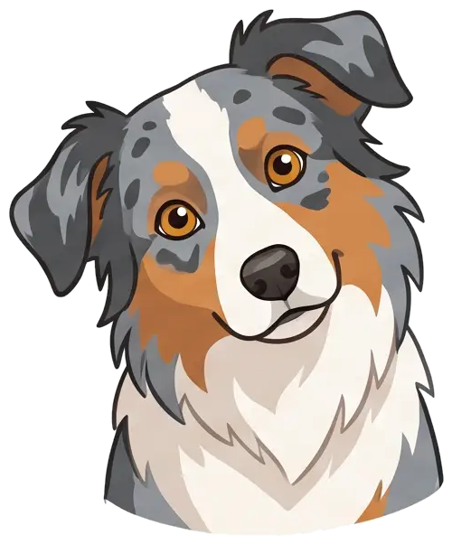
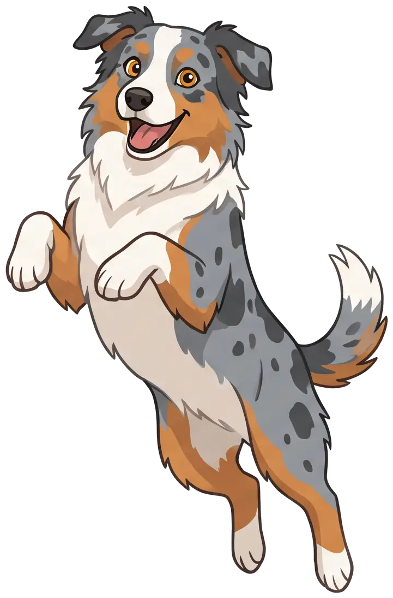

Sehtest
Für deinen Hund ist Rot kein Rot.

Moment mal …
Farbsehen im Vergleich
Du siehst drei Grundfarben. Er nur zwei.
Du
Dein Hund
Hunde: 2 Zapfentypen im Auge, Menschen: 3 · vereinfacht
Der rote Ball im Gras
Was er sieht.
Du
Dein Hund
Simulation Rot-Grün-Sehen · Darstellung vereinfacht
Tipp für den Spielzeugkauf
Lieber blau oder gelb kaufen.
So sieht er's

Gefunden!
rot ist für deinen hund kein rot
hunde sehen nur zwei grundfarben
vor allem blau und gelb
ein roter ball im grünen gras?
für ihn schwer zu erkennen
besser: blau oder gelb
Folgen für mehr Hundewissen

HundeWissenTv